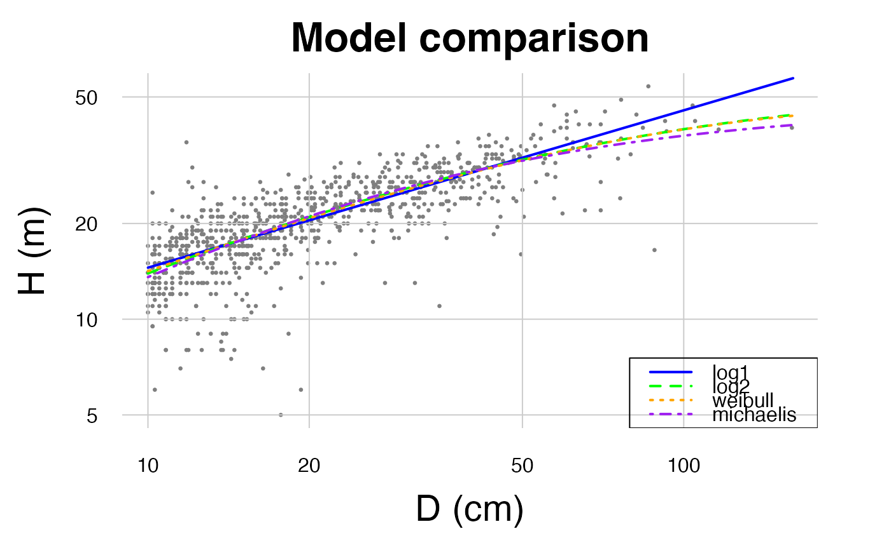
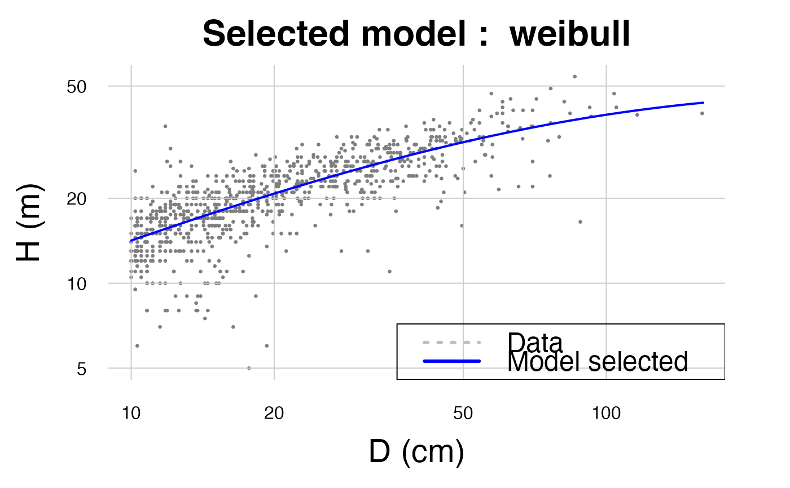
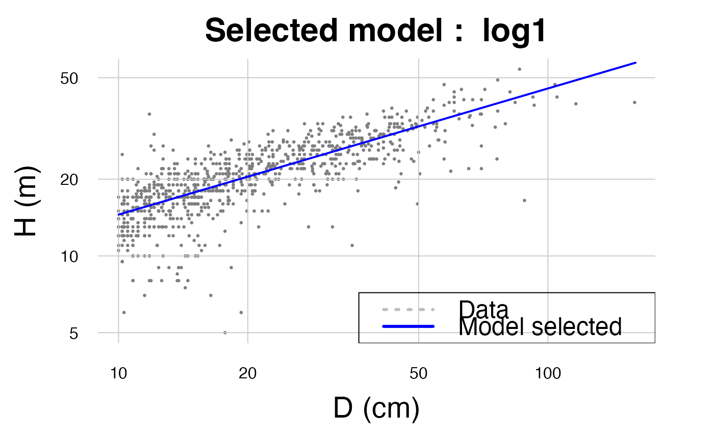
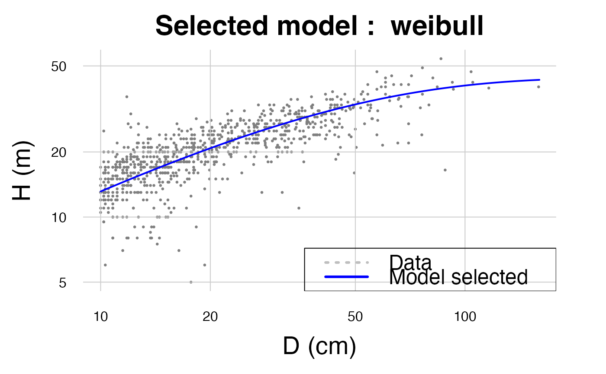

This function fits and compares (optional) height-diameter models.
Arguments
- D
Vector with diameter measurements (in cm). NA values are accepted but a minimum of 10 valid entries (i.e. having a corresponding height in H) is required.
- H
Vector with total height measurements (in m). NA values are accepted but a minimum of 10 valid entries (i.e. having a corresponding diameter in D) is required.
- method
Method used to fit the relationship. To be chosen between:
log1, log2
log 1: \((log(H) = a+ b*log(D))\) (equivalent to a power model)
log 2: \((log(H) = a+ b*log(D) + c*log(D)^2)\)
weibull: \(H = a*(1-exp(-(D/b)^c))\)
michaelis: \(H = (A * D)/(B + D)\)
If
NULL, all the methods will be compared.- useWeight
If weight is
TRUE, model weights will be \((D^2)*H\) (i.e. weights are proportional to tree volume, so that larger trees have a stronger influence during the construction of the model).- drawGraph
If
TRUE, a graphic will illustrate the relationship between H and D. Only if argumentplotis null.- plot
(optional) Plot ID, must be either one value, or a vector of the same length as D. This argument is used to build stand-specific HD models.
Value
If plot is NULL or has a single value, a single list is returned. If there is more than one plot, multiple embedded lists are returned with plots as the list names. Returns a list if the parameter model is not null:
input: list of the data used to construct the model (list(H, D))model: outputs of the model (same outputs as given bystats::lm(),stats::nls())RSE: Residual Standard Error of the modelRSElog: Residual Standard Error of the log model (NULLif other model)residuals: Residuals of the modelcoefficients: Coefficients of the modelR.squared: \(R^2\) of the modelformula: Formula of the modelmethod: Name of the method used to construct the modelpredicted: Predicted height values
If the parameter model is null, the function return a graph with all the methods for comparison, the function also returns a data.frame with:
method: The method that had been used to construct the graphcolor: The color of the curve in the graphRSE: Residual Standard Error of the modelRSElog: Residual Standard Error of the log model (NULLif other model)Average_bias: The average bias for the model
Details
All the back transformations for log-log models are done using the Baskerville correction (\(0.5 * RSE^2\), where RSE is the Residual Standard Error).
Examples
# Load a data set
data(NouraguesHD)
# To model the height from a dataset
# \donttest{
HDmodel <- modelHD(D = NouraguesHD$D, H = NouraguesHD$H, drawGraph = TRUE)
#> To build a HD model you must use the parameter 'method' in this function

# }
# If the method needed is known
HDmodel <- modelHD(D = NouraguesHD$D, H = NouraguesHD$H, method = "weibull", drawGraph = TRUE)

HDmodel <- modelHD(D = NouraguesHD$D, H = NouraguesHD$H, method = "log1", drawGraph = TRUE)

# Using weights
HDmodel <- modelHD(
D = NouraguesHD$D, H = NouraguesHD$H, method = "weibull", useWeight = TRUE,
drawGraph = TRUE
)
